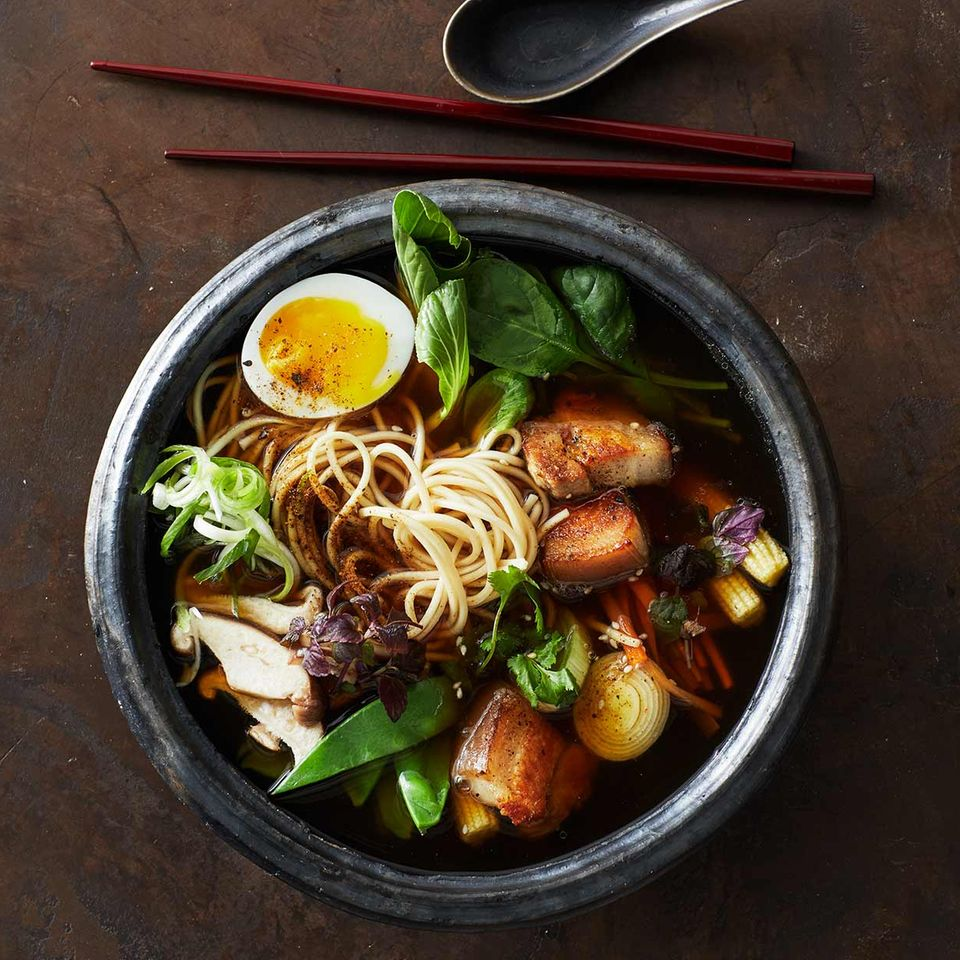

Ramen

Beschreibung
Ramen ist in Japan eine Art Nationalgericht. Die Rezepte sind regional geprägt,
daher schmeckt die aromatische Suppe überall ein wenig anders.
Nach Belieben noch in Scheiben geschnittene Lauchzwiebel darüberstreuen.
Zutaten
Für 4 Personen
- 2 kleine Möhren
- 2 Zehe(n) Knoblauch
- 2 Schotte(n) Chilli
- 1 Stange Pourre
- 300 g Hähnchenbrust
- 1.5 l Hühnerbrühe
- 2 TL Instant-Wakame
- 2 EL Erdnussöl
- 4 El Sojasoße
- 3 EL Sweet-Chilli-Soße
- 400 g Ramen
- 4 EL Misopaste
- 75 g Mungobohnensprossen
- Möhren schälen und in feine Stifte schneiden. Knoblauch schälen und fein würfeln.
Chilli in feine Ringe schneiden. Porree waschen, putzen und in schmale Streifen oder Ringe schneiden.
Hähnchen in dünne Streifen schneiden.
-
Brühe in einem großen Topf aufkochen. Möhren, 2/3 der Chili, Lauch und Wakame zugeben.
Ca. 3 Minuten köcheln lassen.
-
Öl in einer Pfanne erhitzen, Hähnchen und Knoblauch darin anbraten. Mit Sojasoße und Sweet-Chilli-Soße ablöschen.
Nudeln in die Suppe geben und Misopaste unterrühren. Suppe auf Schale verteilen. Das Fleisch dazugeben und mit Sprossen und restlichem Chilli garnieren.
HOME